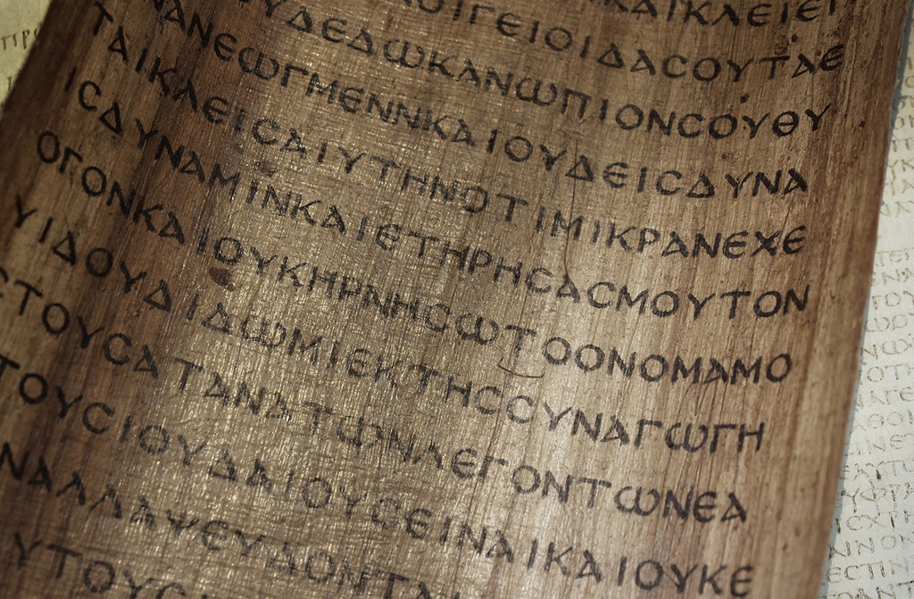
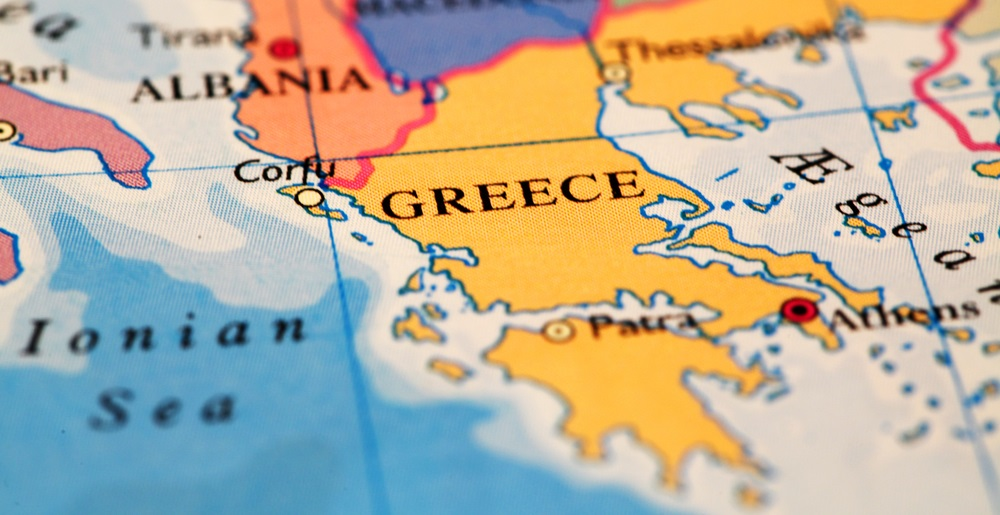

Op deze website wordt de Griekse cultuur van ver voor Christus beschreven. De oud-Griekse cultuur die op deze website behaldeld wordt is deel van de cultuur uit de klassieke oudheid. Er valt hier genoeg te leren over de oude Grieken, een perfecte website voor geschiedenis fanaten dus.

Griekenland was in de oudheid niet een land, het bestond uit allemaal stadstaten, poleis. Deze stadstaten hadden allemaal hun eigen politiek. Vaak voerden deze stadstaten onderling oorlog voor macht, invloed of grodstoffen. Soms werkten ze wel samen, zoals tijdens de oorlogen tegen de Perzen.
Er waren best wat verschillen tussen de stadstaten: zoals eerder vermeld kon de politiek verschillen, maar ook lokale helden verschilden of ze habben verschillende dialecten.
Er waren ook overeenkomsten tussen de stadstaten. Zo vereerden ze over het algemeen dezelfde goden en was de bouw van de tempels ongeveer hetzelfde. Het zijn ook deze overeenkomsten waarom we over Grieken spreken en niet over aparte stammen of steden.
 De Griekse wereld was eigenlijk veel groter dan alleen Griekenland. Vanwege alle koloniën die waren gesticht, streek de Griekse cultuur helemaal vanaf het zuiden van Italië naar het oosten van Turkije en zelfs tot kusten van de zwarte zee.
Naast dit was de Griekse geschiedenis ook lastig te bestuderen, omdat ze tot ongeveer 700 v.C. geen schrift gebruikten voor andere dingen dan voor administratie.